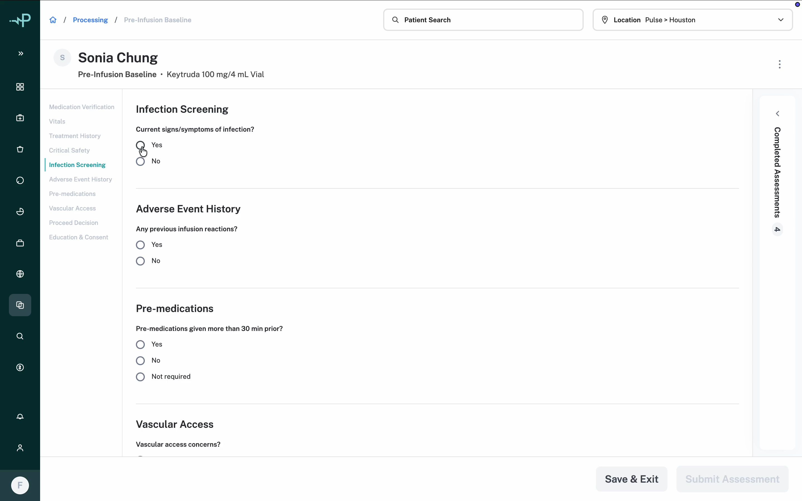
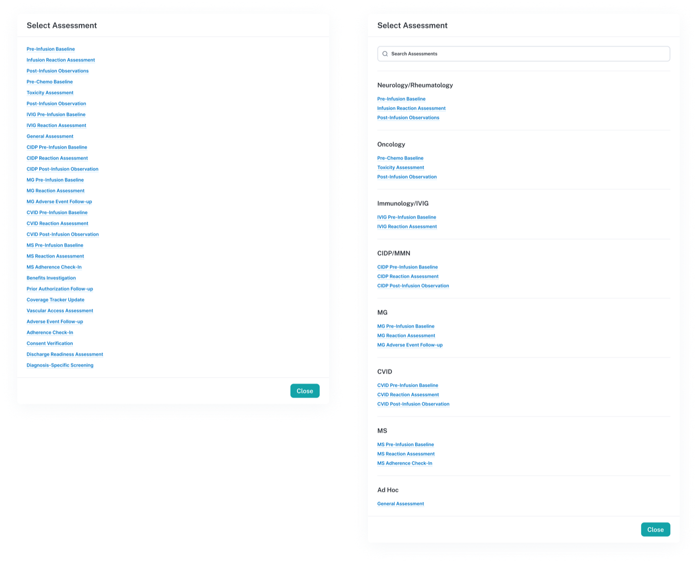
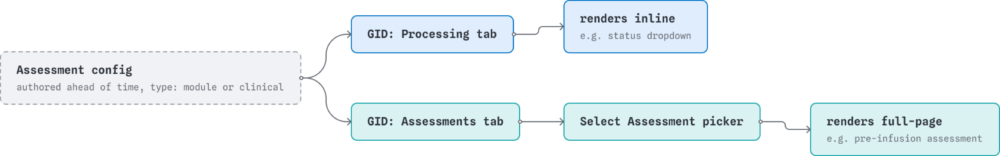
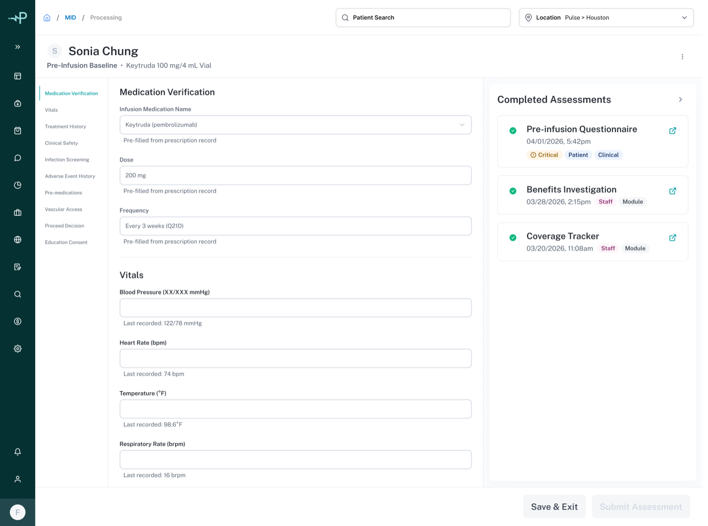
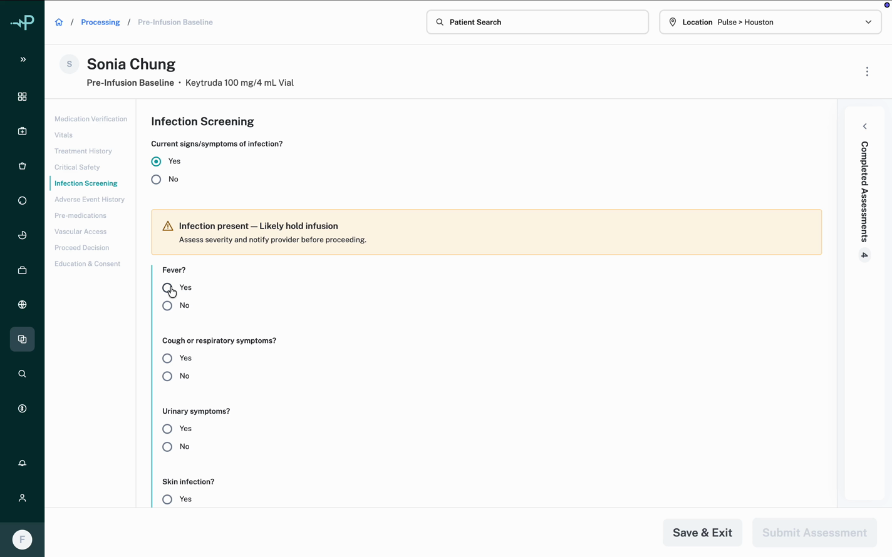
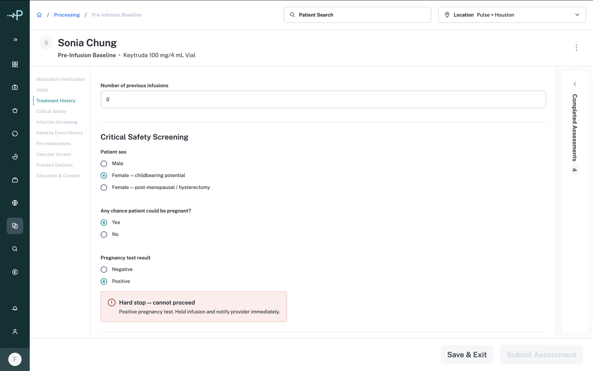
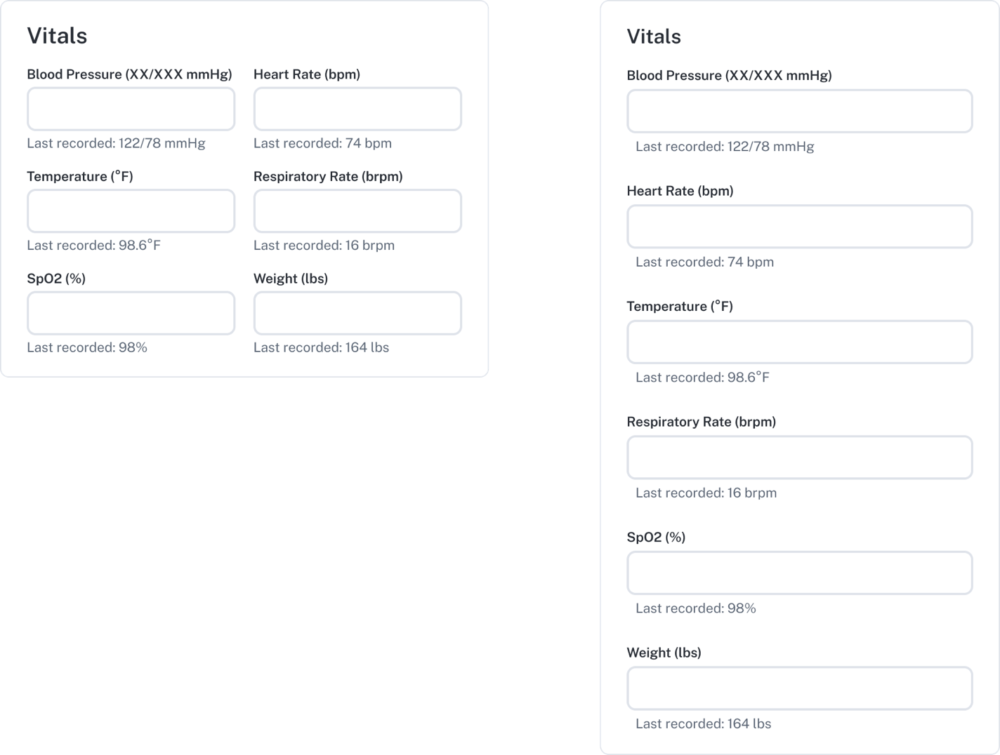

Case study
Assessments at Scale, Safety Stops Included
Pre-Infusion Assessment Flow
I designed a framework for OnePulse Connect to select, complete, and review the 20 to 40 clinical and module-level assessment types it had at the time, all through one system. Then I stress-tested it against the hardest case in the catalog, a 43-question form with hard safety stops.

The Problem
At Elevate Health Technologies, I was the solo designer on the assessment system for OnePulse Connect, its specialty pharmacy platform. It started with one case, a nurse filling out a pre-infusion form for one therapy. Then the clinical data came in directly from clinical staff. The branching-logic spreadsheet they provided covered therapy groups like Neuro/Rheum, MS, CIDP/MMN, and CVID, and every assessment in it carried several independent dimensions at once: the therapy and phase it applied to, who completed it (staff on-site or a patient remotely), where it fell in the infusion timeline, and the branching between its own questions.
A flat list of assessment cards worked for a handful of items. One therapy group alone could have four or more assessments across several phases, though, and with multiple groups in the system the count was closer to 20 to 40 assessment types. The selection pattern had to hold up at that size.
Why This Matters
Pre-infusion assessments gate whether a patient can go ahead with treatment. Some answers have to trigger a hard stop on the spot, like a positive pregnancy test or a patient refusing consent.
OnePulse Connect also kept adding therapy programs. If the pattern for finding and completing an assessment didn't generalize, each new program would get bolted onto something that wasn't built for it. I wanted to get the framework right once, so a new therapy group wouldn't turn into its own design project.
The Framework
The first decision was how assessments get selected at scale. I looked at two approaches. The grouped list with collapsible category headers was the most familiar, but once a few categories were expanded it still turned into a long scroll. Search-first with filter chips would scale best long-term, but on its own the complexity wasn't worth it. I went with a hybrid, a single searchable list grouped by therapy category. In this design, adding a therapy group would take one new entry in that structure, and new assessments would slot in under their group.

The second decision was where someone runs into an assessment in the first place, and how it renders. OnePulse Connect already had the Global Inline Drawer (GID), an existing panel in the product and a component in the design system. I designed module assessments to be performed inside its Processing tab, inline with whatever the user is already doing there, like a status dropdown with a conditional reason field. Because they're embedded in modules, module assessments like Benefits Investigation and Prior Authorization Follow-up don't appear in the "after" picker above. Clinical assessments like pre-infusion would sit behind a separate Assessments tab and open as a full page with sections, branching logic, and hard stops. An assessment's config would decide which path it belongs to before anyone sees it, which keeps each path simple. Both decisions are about how staff get to an assessment once they're looking for one. Whether they should have to browse at all comes up again near the end.

Pre-Infusion as the Worked Example
I picked pre-infusion to test the framework because nothing else in the catalog is harder. It has the most sections and the most branching, and it's the only assessment type with hard safety stops. If the framework held up here, it would hold up for everything else.
The form has 35 core questions, plus 8 more scoped to diagnosis-specific branches, for 43 total. They fall into ten sections, always in this order: Medication Verification, Vitals, Treatment History, Critical Safety, Infection Screening, Adverse Event History, Pre-medications, Vascular Access, Proceed Decision, and Education & Consent. PMs, the Director of Clinical Pharmacy Innovation, nurses, and other clinical reviewers reviewed that order and the hard stops. As a clinical assessment, it opens as a dedicated full page, and the picker that selects it is the only dialog.
The page has three regions. On the left is a vertical list of sections with the active one highlighted, the form sits in the center, and on the right an inline drawer lists completed assessments as cards, so a nurse can check prior responses without losing their place. That drawer belongs to this page. It's separate from the Global Inline Drawer used on Processing pages. An early version swapped the section list for a progress stepper. I cut it because a stepper implies a fixed, linear sequence, and the branching logic doesn't work that way.

Some answers open follow-up questions inline, right below the question that triggered them, with no page reload and no jump away from where the nurse is working.

A positive pregnancy test or a refused consent triggers a hard stop. Those hard stops show up as alerts directly next to the question that triggered them, at the point of decision. A banner at the top of the form is easy to scroll past. The nurse can still submit the assessment, and it's recorded as a hard stop, meaning the assessment couldn't be fully performed.

I originally laid out some fields two or three to a row, like blood pressure and heart rate side by side in Vitals. I changed the whole form to one field per line, Vitals included. Someone moving through a long form under time pressure needs a predictable vertical rhythm they can scan, and the space it saved wasn't worth losing that.

Reasoning Under Iteration
Yes/No questions started as dropdowns. A dropdown takes two clicks to answer a question with two possible values and hides both until it's opened, which adds up on a form with dozens of them. Most of those questions also trigger branches, and with both options visible it's easier to see why a set of sub-questions just appeared. I switched them to radio buttons. My first pass also laid short option sets out horizontally. That broke a rule in the OnePulse Connect design system I'd built, which keeps radio options vertical regardless of option count. I caught the deviation and changed it to match.
Clicking a completed assessment used to bring up a chooser asking whether to view it standalone or alongside an active assessment. For the standalone case, that step added a click for no reason. Now a click opens a read-only view directly. The side-by-side option moved inside active assessments, the only place it's relevant.
After feedback from a PM, I also replaced the submission confirmation. It used to stack on top of the assessment, which looked cluttered. Now the form content transforms in place into a success state, a summary card, and a single "Done" button on the same surface.
When a Branch Changes What's Required
Submit had to stay disabled until every required field was filled. On this form, the required set can't be a fixed list. Answering "yes" on infection screening opens four follow-up fields: fever, cough, urinary status, and skin infection. All four become required, and switching back to "no" removes them from the required set. So the spec defines required fields per branch: opening a branch adds its follow-ups to the required set, and closing it takes them out.
The prototype's validator code was AI-generated, and an early version treated the required set as fixed. It let submission through with all four infection follow-ups empty. I caught that by reviewing the generated logic, then prompted a specific fix so the required set follows the branch.
Where It Stood When I Left
I fully designed and spec'd this work, including the branching logic, hard stops, alert placement, and the selection framework. It was never built into OnePulse Connect's production codebase. I tested the design in a working prototype through my own testing, testing with real users, and stakeholder review. The clips on this page come from that prototype, which runs end to end from picking an assessment through submission. Claude Code generated its code under my direction, and it was never deployed for public use.
The framework I designed covers clinical assessments like pre-infusion, which open as full pages with sections and branching, and lighter module assessments that render inline in whatever module a user is working in, with config deciding which is which. The design also gives the inline drawer a reference view of every assessment run across modules for a patient, so staff can look back without leaving where they are. I didn't design the patient-facing side, where a patient fills an assessment out remotely. That was outside my scope.
What's Next
Building it would mean wiring the framework to real assessment data in place of the CSV-derived example set and extending it past the therapy groups I used during design.
When I tested the prototype with Humira, a self-administered biologic, the picker still offered infusion-specific assessments that didn't apply to it at all. In the design, selection happens from inside a specific patient's active medication or order, so the system would already know enough to filter the picker to the relevant therapy group automatically. Staff would still need the grouped, searchable list for Ad Hoc assessments, broader browsing, or work across therapies. Context-aware filtering is the next thing I'd design if I picked this back up.